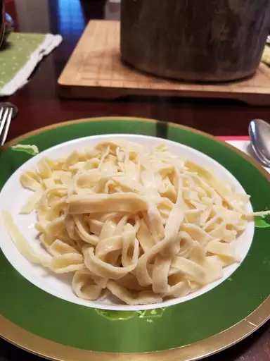

Pasta

Description
This homemade pasta recipe is consistently great and easy to make with flour, eggs, salt, olive oil, and water. Roll out by hand or use a pasta machine to cut dough into desired pasta shape.
Ingredients
- flour
- eggs
- oil
- salt
- water
Steps
- Gather all ingredients.
- Mix flour, eggs, olive oil, and salt in a bowl until combined. Add water, 1 teaspoon at a time, until a smooth, thick dough forms.
- Turn dough out onto a lightly floured work surface and knead for 10 minutes. Let dough rest for 5 to 10 minutes.
- Divide dough into 8 balls; roll and cut dough into desired pasta shape using a pasta machine.
go back to recipes